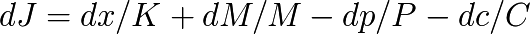

Champ de valeur
Équation fondamentale du champ de valeur
Au regard de ce qui a été précédemment établi, nous avons en tout point « x » de l’espace économique et au temps « t », une production Cx, associée à un prix Px, ainsi qu’un flux de production entrante ou sortante (positive ou négative) Cfx associée à un prix Pfx, ainsi qu’une monnaie créée en X dMx et un flux de monnaie entrante ou sortante (positive ou négative) dMfx.
Dans le cas où la monnaie représente très exactement la valeur produite et échangée nous avons :

Mais comme par ailleurs cette égalité n’est que très exceptionnellement réalisée lors d’échanges ou de productions immédiats, nous appelons J le champ généralement non nul, défini en tout point « x » de l’espace-temps économique, par :

dMx représente donc ici le Dividende Universel, Px × dCx le potentiel de valeur individuel (la part d’innovation économique de chaque individu), tandis que dMfx représente le flux local de la masse monétaire totale préexistante, et Pfx × Cfx le flux local des échanges (positif s’il augmente, négatif s’il diminue).
Le champ de valeur différentiel est dynamique, évolue dans le temps, et mesure donc en chaque point de l’espace économique, le différentiel de monnaie et de valeur créées par l’individu « x », ajouté à la part de monnaie et de valeur globale circulante au point « x ».
Le champ résultant de son intégration « J(t) » montrera donc des bosses positives là où se trouveront des surplus de monnaie par rapport à la valeur potentielle locale de la production effective de biens et services, et inversement des creux là où la valeur potentielle locale de la production excèdera la quantité de monnaie présente (qui peut être négative dans le cas d’une émission de dette...).
Exemple de champ pour une zone économique comprenant une zone d’excès monétaire représenté par une bosse, et une zone où il y a une production de valeur associée à une rareté monétaire représentée par un creux, le reste de la zone étant équilibré.
Étant donné que la valeur est relative à l’observateur qui la mesure, (aux acteurs qui l’échangent), on parlera de façon plus exacte de « valeur potentielle locale de la production » et non pas de valeur au sens absolu qui serait quelque chose de reconnu par tous les acteurs de l’économie, ce qui n’a pas de sens en théorie relative de la monnaie.
Pour peu que ces deux zones soient pseudo-isolées au sein de la zone économique, et produisent les mêmes biens et services, on aura des prix élevés dans l’une et bas dans l’autre uniquement à cause de la densité monétaire ainsi distribuée.

Variations spatiales du champ de valeur (Luc Fievet TRM 2.0)
NB : Yoland Bresson définit le champ de valeur comme

où K représente l’étalon temps (le Dividende Universel), M la masse monétaire P la production et C les échanges économiques. Le champ de valeur ainsi posé est sans dimension. Les deux définitions sont proches, car basées sur les mêmes grandeurs, et prenant toutes deux la mesure du local et du global dans une équation différentielle. Je distingue par ailleurs, dans un souci de précision la part de production et de monnaie créée localement et celle qui est échangée.
Le champ de valeur de l’argent dette
Cette définition du champ de valeur permet de se représenter l’évolution des économies à mécanisme d’argent-dette. Le centre d’émission bancaire émet de la monnaie-dette qui se diffuse ensuite sur les bords.
L’émission initiale de dette se fait pour un premier cercle de bénéficiaires qui sont soit les banques elles mêmes, les états grands consommateurs de monnaie dette, ou encore les grandes entreprises, l’ensemble consommant l’essentiel de cette création de crédit unilatérale. Cette monnaie émise de façon abrupte et centralisée dévaluera lentement la monnaie disponible dans le reste de la zone économique au fur et à mesure de sa diffusion dans l’espace économique.

(Luc Fievet TRM 2.0)
Le terme « monnaie-dette » est insuffisant pour comprendre le mécanisme, parce que la dette émise n’est en fait jamais vraiment remboursée, seuls les intérêts sont en général payés assurant une rente perpétuelle à l’émetteur monopolistique.
Ce système monétaire centralisé et asymétrique doit sa perpétuation à son monopole, ainsi qu’à l’octroi de toujours plus de dettes à un rythme suffisant pour payer les intérêts, mais uniquement pour le premier cercle. Le reste de l’économie n’est servi en monnaie qu’en échange de production réelle (ce dont s’abstient le premier cercle émetteur), et est donc assujetti au pouvoir monétaire.
Le champ de valeur d’un système d’échange local « SEL »
Les SEL se développent lors des crises monétaires cycliques, du fait de l’absence de monnaie, qui bloque l’économie et les échanges éloignés du centre d’émission d’argent-dette. Les communautés disposant d’une pseudo-autonomie sur des domaines d’activités en général limités, développent alors une monnaie complémentaire symétrique, qui permet de s’affranchir en partie de la monnaie centrale.
Les SEL se créent la plupart du temps sur un modèle symétrique de crédit mutuel et ne font donc pas apparaître de distorsions quant à la monnaie créée au sein de la communauté économique. Étant créés sur la base d’une monnaie complémentaire, leurs échanges ne sont pas officiellement comptabilisés dans l’économie officielle, et c’est une part considérable du PIB qui échappe ainsi à la valorisation de l’économie, du fait de la non-densité intrinsèque aux monnaies à émission asymétrique.

Le SEL est « plat » initialement, sa densité de création monétaire est spatialement équilibrée. Elle ne le sera pas temporellement s’il utilise un crédit mutuel fixe donc créé une seule fois à l’origine de son axe de temps économique (Luc Fievet TRM 2.0)
Le champ de valeur de la production non monétisée
La production non monétisée, par absence totale de monnaie centrale ou locale, apparaît dans le champ de valeur comme un creux : (monnaie = 0) – valeur < 0. C’est le cas de toute la production troquée, donnée, produite sans échanges marchands, dont font partie l’essentiel de la production des logiciels libres, des œuvres libres de droits, de tous les services bénévoles, qui bénéficient dans une une part non négligeable à l’économie monétisée.
On peut se demander pourquoi des producteurs donnent leurs productions sans bénéficier d’un retour monétaire. La raison en est que certaines valeurs sont d’autant plus importantes qu’elles se diffusent rapidement, largement et librement, permettant l’établissement d’usages, de normes, et de recrutement de nouveaux producteurs apportant leurs modifications à la communauté.
La valeur de ce type de production dépasse d’un facteur d’échelle incommensurable la valeur de l’ensemble des entreprises cotées du secteur, quand on en chiffre le coût de développement équivalent qu’il faudrait investir pour produire la même chose. Il faut simplement penser qu’en 2010 tout internet fonctionne essentiellement sur des couches libres, en terme de protocoles, serveurs, logiciels, base de données...
La Science elle-même fait l’objet le plus souvent de découvertes libres de droit. Les inventeurs scientifiques sont le plus souvent amenés à publier leurs découvertes afin de les faire valider par leurs pairs, et il s’agit d’un travail collaboratif autant dans le temps (les scientifiques du présent bénéficiant des découvertes d’hier) que dans l’espace (les découvertes étant aussi le plus souvent issues d’un travail commun). On peut se demander par exemple ce qu’Einstein aurait pu retirer comme droits sur la « propriété intellectuelle » de la Théorie de la Relativité. Ce serait intéressant à chiffrer, pour savoir exactement ce que le bonhomme a donné en termes économiques « habituels »...
Il semble que les producteurs de logiciels et d’œuvres libres n’aient pas encore pris la peine d’intégrer l’outil monétaire au sein de leur communauté, ce qui est un mystère, bien que la révélation du mystère monétaire ne soit pas aisée, elle est typiquement de l’ordre de l’algorithmique et du jeu, domaines maîtrisés par cette communauté. Pourtant il existe déjà des logiciels permettant d’établir un lien monétaire communautaire, et qui se déploient rapidement.

La production non-monétisée peut-être tout à fait énorme en terme de valeur et arbitrairement ignorée d’un centre arbitraire d’émission d’une « monnaie dette » qui ne monétise que ce qu’il connaît, niant ainsi la deuxième liberté économique. (Luc Fievet TRM 2.0)
Cependant, pour compenser ce triste constat, sans doute temporaire, on peut remarquer que les grandes communautés créées autour d’activités ludiques comme Seconde Life, mais plus encore sans doute World of Warcraft, ont développé une approche monétaire puissante. Ainsi la monnaie interne du monde persistant de WoW, n’est pas créée convenablement, mais reste accessible via des actions normales du jeu, fait l’objet de transactions extérieures, y compris en monnaie officielle. Ceci démontre de façon indubitable, que dès lors qu’une monnaie se crée au sein d’une communauté, la valeur se révèle, et non pas l’inverse.
C’est donc parce qu’il n’y a pas encore de monnaie circulante au sein de la communauté créant des valeurs libres de droit, que la valeur de ces œuvres libres n’est pas actée. Tandis que la création d’une monnaie au sein d’une communauté de jeu fait spontanément jaillir une valeur mesurable. La monnaie est donc non seulement un outil d’échange mais un outil de mesure participatif. On ne peut pas mesurer de valeur économique dans une zone privée de monnaie. C’est une grande incompréhension de ce mécanisme qui fait diriger des politiques économiques sur des données comme le PIB, qui ne mesure que ce qui est déjà monétairement irrigué, créant des effets de bulles et de résonance, et ne finançant que le passé à base de créances sur le futur, et jamais le futur sur la base d’un Dividende sur le passé.
L’énorme valeur non monétisée a pour fonction d’appeler à une énorme création monétaire, qui dépasse de très loin la somme des anciennes valeurs sur lesquelles circulent la monnaie pré-existante. Ceci est la base productive des poussées inflationnistes historiques : la création violente d’argent-dette dans le but pour ses émetteurs de s’accaparer frauduleusement de la nouvelle valeur de remplacement économique.
Le champ de valeur d’une économie à Dividende Universel
Une économie à Dividende Universel égalise la création monétaire. Cela n’empêche en rien l’apparition de creux et de bosses, mais cela les rend partout possibles, sans aucun point central, et surtout suscitant une circulation de la monnaie dans toute la zone économique par sa structure intrinsèquement dense, qui limite les points et les durées d’accumulation tant monétaires que productives.

Champ de valeurs fluctuant, sans point central (Luc Fievet TRM 2.0)
Il n’y a pas dans ce type d’économie de point central de création de monnaie, ce qui rend tout projet, toute production, et tout circuit économique autonome directement monétisable partout et en tout temps.
Dans un champ monétaire d’argent-dette, loin d’un centre d’émission, on retrouvera ce type de structure, mais à une échelle trop faible par rapport aux distorsions centrales, ce qui la fera apparaître comme plate (à distorsion négligeable) vu depuis le centre. Le problème est alors la force d’attraction de la fausse dette centrale (et vraie création monétaire asymétrique et frauduleuse) qui provoque une lutte incessante pour s’en libérer.
Les forces en jeu
Le champ de valeur a tendance à osciller autour de son point d’équilibre. Aussi un creux aura tendance à augmenter jusqu’à attirer la monnaie existante, et si elle n’est pas suffisante, à susciter la création monétaire (jusqu’à susciter la création d’une monnaie complémentaire locale). De la même façon la monnaie aura tendance à s’accumuler jusqu’à susciter l’achat de valeurs non monétaires. Creux et bosses sont donc comme deux masses s’attirant l’une l’autre. Ce phénomène peut être vu à toutes les échelles de mesure, de l’individu à la zone économique dans son ensemble, et le processus de comblement des creux par les bosses est inéluctable, qu’il soit continu ou discret, rapide ou lent, pacifique ou violent.
Dans un système central d’argent-dette l’accumulation centralisée de monnaie ou de production se fait jusqu’à un point de rupture où la force d’attraction du surplus excessif de monnaie face au surplus excessif de production non monétisée déclenche un mouvement brutal. Soit en général l’hyperinflation des prix de la production sous-monétisée pendant trop longtemps, qui se développe avec un afflux de monnaie libérée depuis le centre, ou bien des mouvements d’arrêt de production par absence de monnaie ou de contre-partie pendant trop longtemps, ce qui peut mener à des crises sociales d’envergure historique, des révolutions ou des guerres.
Le système de création monétaire choisi (ou imposé) détermine donc le type de développement économique qui s’en suivra ainsi que la forme spatio-temporelle du champ de valeur : une fluctuation continue sans interruption pour un système à Dividende Universel, et des pyramides de monnaie centrale à effondrement cycliques (bulles monétaires, appelées encore bulles spéculatives) pour les systèmes à émission asymétrique.